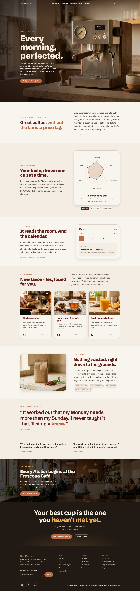
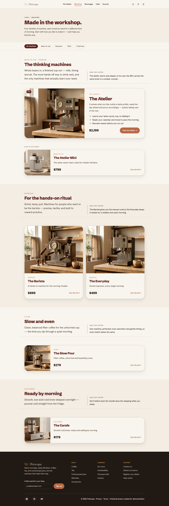
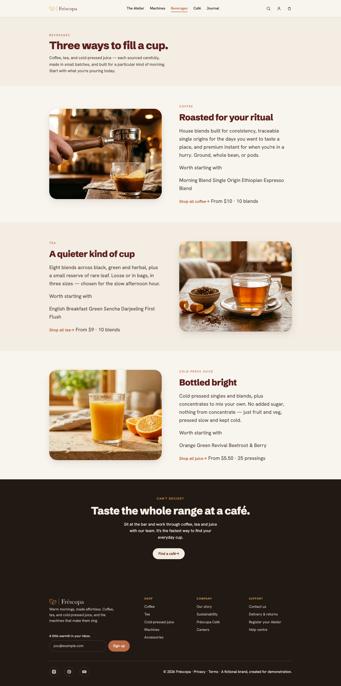
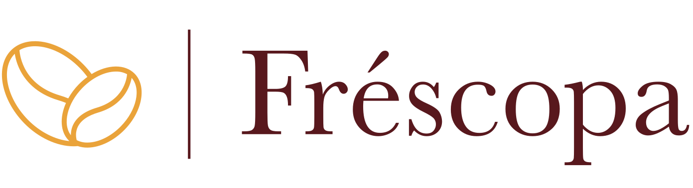

Current-state brand review
Fréscopa
Every morning, perfected.
The first Fréscopa coffee machine with a feel for your mornings. It learns your taste, matches your mood, and takes care of the rest.
https://of1--frescopa26--aem-showcase.aem.page · production domain frescopa.coffee
Coverage
Pages
cross-page

/

/machines

/beveragesSource: pages/*.json § screenshot
Color palette
cross-pageobserved#f8f5ee--paper29 occ · background/beverages, /, /machines#f3ede3--paper-213 occ · background/beverages, /, /machines#ece2d6--paper-36 occ · background/machines#e4d6c7--sand0 occ · unused#2d221b--ink36 occ · text/beverages, /, /machines#5a4d45--ink-soft54 occ · text/beverages, /, /machines#5f201e--burgundy40 occ · text background border/beverages, /, /machines#481311--burgundy-deep0 occ · unused#ba6945--terracotta51 occ · background text border/beverages, /, /machines#9a4f35--terracotta-deep1 occ · text/#ebad54--amber17 occ · text border/beverages, /, /machines#f0cd94--amber-soft0 occ · unused#4d7a7f--teal0 occ · unused#211914--charcoal8 occ · background/beverages, /, /machines#322721--charcoal-20 occ · unused#f3ece1--cream32 occ · background text border/beverages, /, /machines#c4bbad--cream-soft43 occ · text/beverages, /, /machines#d8cdc3--line31 occ · border/beverages, /, /machines#51453e--line-dark15 occ · border/beverages, /, /machinesSource: _brand-extraction.json § palette (oklch :root tokens × _computed-styles.json usage)
Typography
cross-pagesynthesizedNo modular scale Heading family Schibsted Grotesk · body family Hanken Grotesk (self-hosted Google Fonts, OFL)
H1 · Schibsted Grotesk 800 / 86.4px / 1.03–1.15 / -0.02emH2 · Schibsted Grotesk 800 / 44.8px / 1.03–1.15 / -0.02emH3 · Schibsted Grotesk 800 / 25.6px / 1.03–1.15 / -0.02emH4 · Schibsted Grotesk 800 / 25.6px / 1.03–1.15 / -0.02emBODY · Hanken Grotesk 400 / 17px / 1.62The first Fréscopa machine with a feel for your mornings. It learns what you love, softens or sharpens to match your mood, and quietly takes care of the rest. Barista craft, kept warm by a little intelligence.
EYEBROW · Hanken Grotesk 500 / 12px / uppercase / 0.2emMeet the Atelier
Source: _brand-extraction.json § type
Voice
home-onlyinferredTone guess: warm, confident, understated; short declarative headlines with a wry twist
Hero headline
Tagline
The first Fréscopa coffee machine with a feel for your mornings. It learns your taste, matches your mood, and takes care of the rest.First paragraph
The first Fréscopa machine with a feel for your mornings. It learns what you love, softens or sharpens to match your mood, and quietly takes care of the rest. Barista craft, kept warm by a little intelligence.CTA frequency
| Machines | 6 |
| Join the list→ | 5 |
| The Atelier | 3 |
| Beverages | 3 |
| Café | 3 |
| Journal | 3 |
| Add to cart → | 3 |
| Coffee | 3 |
Repeated headings (≥3 pages)
- Shop (3 pages)
- Company (3 pages)
- Support (3 pages)
Source: _brand-extraction.json § voice, voiceTable
Tensions
synthesizedType scale is ad-hoc
86.4 → 44.8 → 25.6 → 17 → 15 → 12px, no consistent ratio (1.93, 1.75, 1.51, 1.13, 1.25). Direct will need to decide whether the target adopts a modular scale.
Single logo variant captured
Only one logo variant captured (img: burgundy wordmark for light grounds). The footer uses a cream variant (icons/frescopa-logo-light.svg) that the locator chain did not record; direct should plan a variant set.
Multiple palette colors used in only one context
background #f8f5ee (background only), surface #f3ede3 (background only), surface-alt #ece2d6 (background only), accent-hover #9a4f35 (text only), dark-surface #211914 (background only), on-dark-muted #c4bbad (text only). Direct will need to decide: drop, expand, or keep as accent.
Tokens defined but not observed
--sand #e4d6c7, --burgundy-deep #481311, --amber-soft #f0cd94, --teal #4d7a7f, --charcoal-2 #322721 are declared on :root but never appear in computed styles on the sampled pages.
Empty alt text widespread
71% of images (15/21) carry empty alt text, including product and category photography. Accessibility issue and a content-sourcing decision for direct.
Arrow-suffix spacing is inconsistent
"Add to cart →", "Meet your coffee agent →" (spaced) vs "Join the list→", "Shop all coffee→", "Find a café→" (unspaced). Direct should pick one CTA convention.
Motifs
cross-pageobservedRadius
999px56 occ32px24 occ50%18 occ11px12 occ22px6 occ2px3 occ14px2 occShadow
oklch(0.3 0.03 50 / 0.07) 0px 4px 14px 0px, oklch(0.3 0.03 50 / 0.08) 0px 14px 34px 0px24 occoklch(0.3 0.03 50 / 0.06) 0px 1px 2px 0px, oklch(0.3 0.03 50 / 0.05) 0px 2px 8px 0px2 occGradients: none observed.
Source: _brand-extraction.json § motifs
Components
cross-pageinferredSource: _brand-extraction.json § motifs.patterns
System components
cross-pageHeadings: —
CTAs: The Atelier · Machines · Beverages · Café · Journal
Headings: Shop · Company · Support
CTAs: Sign up · Coffee · Tea · Cold-pressed juice · Machines · Accessories · Our story · Sustainability · Fréscopa Café · Careers · Contact us · Delivery & returns · Register your Atelier · Help centre
Source: _brand-extraction.json § systemComponents
Logo & favicon
home-only
- Source
header .nav-brand a > picture > img[alt="Fréscopa"]- File
- assets/logo.svg (SVG, 1391x378)
- Colours
- #58181d, #eaa33a
- Variants captured
- primary (burgundy wordmark + amber mark, for light backgrounds)
- Variants not captured
- on-dark (repo ships icons/frescopa-logo-light.svg, cream #f3ece0 wordmark, used in footer); monochrome
- Favicon
- assets/favicon.ico
Source: _brand-extraction.json § logo, favicon
Spacing & shape
observedBase unit 4px · section padding 72px · content 1120px
Radii revisited
Source: _brand-extraction.json § spacing